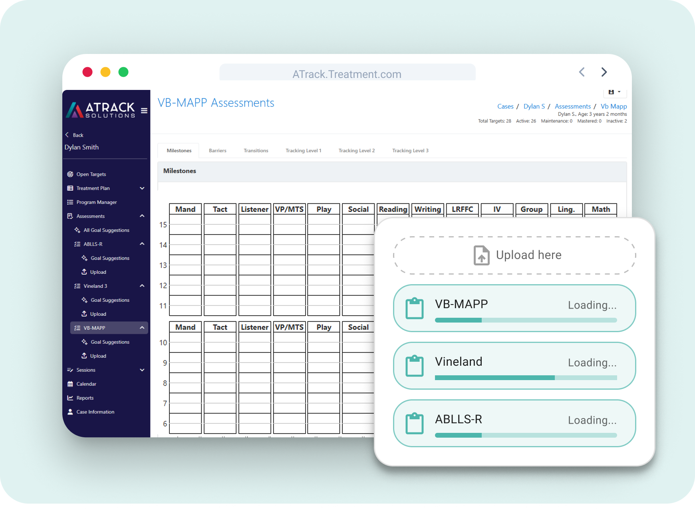
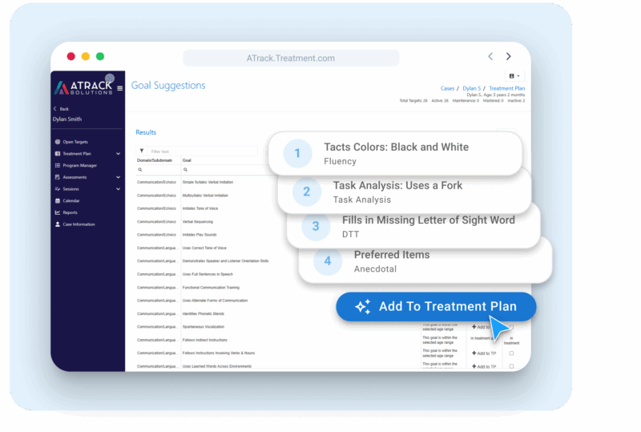
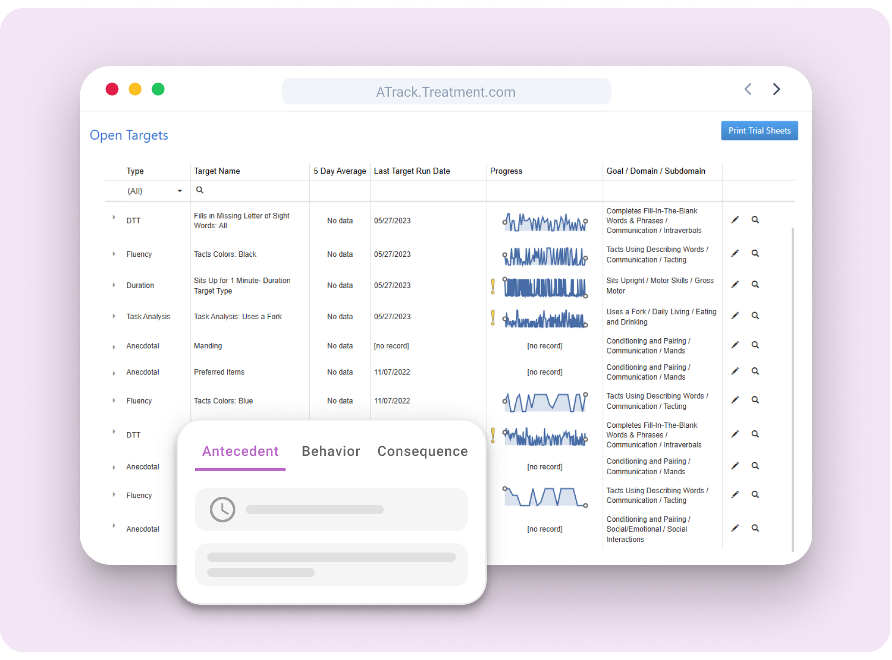
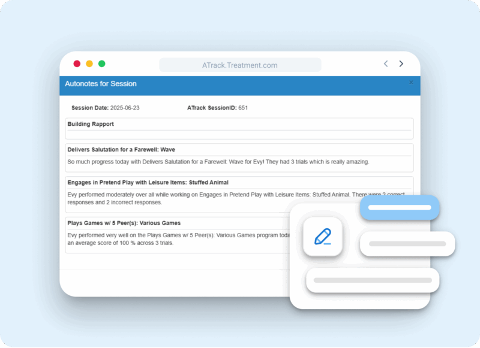
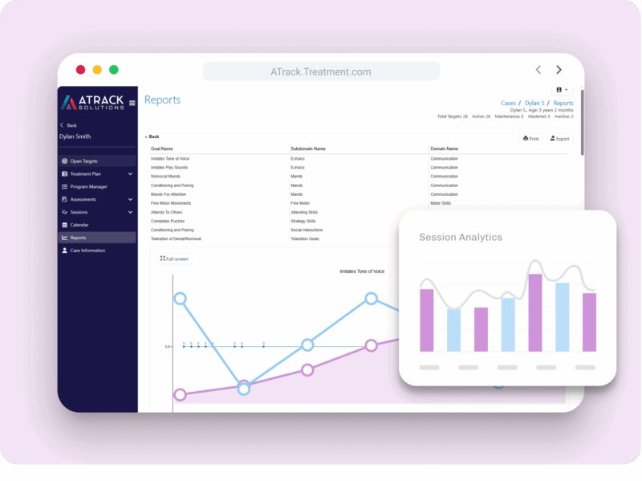

Full-stack across both surfaces
I worked across the whole ATrack platform — the React clinician web application documented here, and the .NET MAUI mobile app that RBTs carry into sessions. Building both sides meant the contract between them was never someone else's problem: the shape of a target, the timing of a sync, and the way a session closes out had to agree, because the same session record has to survive the trip from a tablet in a therapy room to a BCBA's analytics view.
That vantage point is the reason this case study and the ATrack Mobile one are two halves of one system rather than two unrelated projects.
Designed around the clinical workflow, not the database
ABA has a real sequence, and the platform follows it end to end rather than presenting a set of disconnected screens. Each stage hands the next one something it can use.
- 1AssessmentScore VB-MAPP, Vineland, or ABLLS-R in the system instead of on paper.
- 2Treatment planTurn assessment results into goals and measurable progress criteria.
- 3Session playlistStructure what the RBT will actually run — targets, order, data-collection method.
- 4Data collectionTrial-by-trial capture in session, across NET, DTT, and custom session types.
- 5Progress reviewGraphs, trend lines, and mastery summaries that feed the next plan revision.
The loop matters more than any single stage: progress review is what revises the treatment plan, which changes the next playlist. A platform that only moves in one direction leaves the clinician re-keying their own data.
Three assessment instruments, one place to score them
Input, scoring, and analysis happen inside the platform. A BCBA enters results directly against the milestone grid, and those results stay attached to the case rather than living in a separate document — which is what makes the next record possible at all.
- Milestones, barriers, transitions, and tracking levels as native, navigable tabs
- Upload path for existing assessment documents alongside direct entry
- Shareable reports generated from scored data with minimal extra effort

A recommendation engine that defers to the clinician
The system suggests developmentally appropriate goals drawn from assessment data and previous plan history, against a library of more than 5,000 goal items sourced from VB-MAPP, Vineland, ABLLS-R, and ATrack's own assessment. Suggestions arrive ranked, tagged by data-collection type — Fluency, Task Analysis, DTT, Anecdotal — and ready to drop into the plan.
The design constraint that mattered: the BCBA keeps full control to edit, modify, or write a custom goal. A suggestion is a starting point a clinician accepts, not a decision the software makes on their behalf — which is the only version of this feature a licensed practitioner can defensibly sign their name to.

Open targets, at a glance, with the data already attached
Treatment plans are built with structured tools designed for clinical clarity — flexible fields, explicit progress criteria, and team collaboration that synchronizes instantly so the plan an RBT opens is the plan the BCBA just revised.
The open-targets view is the daily working surface: every active target with its type, five-day average, last run date, an inline progress sparkline, and its full goal / domain / subdomain lineage. Targets that have gone stale or flat are flagged in place, so the plan review starts from what needs attention rather than from a blank page.

TrueNote: the session note writes itself from the session
TrueNote transforms the real data collected during a session into a complete, billing-ready note — no second pass, no writing up from memory at the end of a long day. Each program the learner ran becomes a narrative entry with its trial counts and scores already in the prose.
- Compiled from actual trial data, not free-text recall
- Standardized structure that meets billing and documentation requirements
- Editable after the fact, so clinical nuance can still be added
Documentation is where clinical time quietly disappears. Generating the note from data the clinician already collected turns an end-of-day chore into a review step.

Forget spreadsheets — progress you can actually read
Progress is tracked automatically and rendered as interactive graphs, filterable trends, and client-level insights. Built-in trend lines and mastery summaries can be filtered by date, target type, and phase, so a clinician can isolate the question they are actually asking instead of exporting to a spreadsheet and rebuilding the chart by hand.
- Per-goal, per-target, and per-client graphing with full-screen review
- Trend lines and mastery summaries computed from collected trial data
- Print and export paths for reporting and funder documentation
- Simple billing export with therapist notes and timestamps aligned to insurance and Medicaid requirements

Two surfaces, one clinical record
The platform is deliberately split by who is doing what. The BCBA plans and interprets on the web; the RBT collects in the moment on a tablet. Both write to the same record, which is where the engineering difficulty actually lives.
Web · BCBA
- Assessment scoring and analysis
- Goal recommendation and plan authoring
- Session playlist construction
- Analytics, reporting, billing export
Mobile · RBT
- Real-time data collection across target types
- Offline mode with safe local storage and later sync
- Post-session note editing for accuracy
- Two active sessions on one device, kept distinct
Offline mode is the requirement that shapes everything else. A therapy room with no signal cannot be a room where data is lost, so the mobile app owns the session locally and reconciles on reconnect — which means the web side has to treat arrival time and session time as different things. See the ATrack Mobile case study for that half of the story.